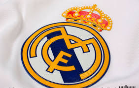
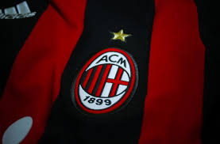
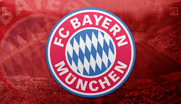
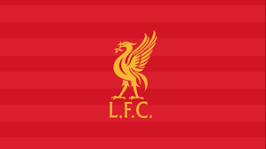
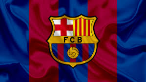
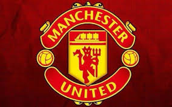
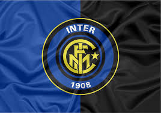
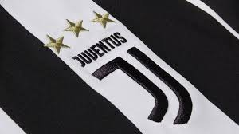

Top 10 das equipes mais vencedoras:
1º - Real Madrid: 13 títulos.

2º - Milan: 7 títulos.

3º - Bayern de Munique: 5 títulos.

4º - Liverpool: 5 títulos.

5º - Barcelona: 5 títulos.

6º - Ajax: 4 títulos.
7º - Manchester United: 3 títulos.

8º - Inter de Milão: 3 títulos.

9º - Benfica: 2 títulos.
10º - Juventus: 2 títulos.
